0. 課程資訊與教材
| 課程名稱 | 生成式 AI 應用電台・訂閱制第三季 第三堂 |
|---|---|
| 直播日期 | 2026/08/14（四）晚間 20:00 開始，全長約 2 小時 26 分（分兩段錄影） |
| 講師 | 益師傅（楊俊益，暱稱 ECF；智慧立方有限公司） |
| 參與人數 | 約 80 位學員（Teams 線上直播，錄影中最多 83 人在線） |
| 本堂主題 | 兩套自製工具：聲刻 Voice Foundry（本機聲音克隆＋Podcast）與貼課通（課堂即時牆）；核心觀念是「純前端單檔工具怎麼上雲」 |
| 課程教材 | Drive 資料夾「第三堂」：課程錄影×2、聲刻-可攜版.zip、CAST-STUDIO-win.exe、貼課通-教師專業版.html、貼課通-學生專業版.html、BMC 商業模式畫布生成器.html |
📁 課程資料夾（Google Drive）
完整教材在這個共享資料夾，滑進去可看到兩段錄影與四個工具檔：
🎬 課堂錄影（可直接在頁面播放）
第一段（約 60 分）：聲刻聲音克隆＋ElevenLabs＋CAST Podcast。第二段（約 86 分）：CAST STUDIO 獨立版＋貼課通全功能＋上雲發布。
🧰 四個工具檔（都放在同一個資料夾）
| 工具 | 檔案 | 一句話 |
|---|---|---|
| 聲刻 Voice Foundry | 聲刻-可攜版.zip（約 7 GB，內含模型） | 本機聲音克隆＋Podcast 生成，雙擊 聲刻.exe 啟動 |
| CAST STUDIO | CAST-STUDIO-win.exe（約 15 MB） | 聲刻 Podcast 工作室的獨立打包版 |
| 貼課通（教師版） | 貼課通-教師專業版.html（單檔） | 開房、管理、全互動功能的課堂即時牆 |
| 貼課通（學生版） | 貼課通-學生專業版.html（單檔 271 KB） | 輸入房號加入課堂，同源但關閉房主功能 |
| BMC 生成器 | BMC商業模式畫布生成器.html（單檔） | 上傳資料→AI 拆解九宮格商業模式畫布（延伸工具） |
1. 一張圖看懂本集
這堂課表面在示範兩個工具，骨子裡在講同一件事：AI 幫你把「一件事做到底」的小工具做出來，再用免費管道送上雲端給大家用。
2. 開場：災難復原與 Codex 專案搬遷 [00:00–06:00]
老師先接續上一集的觀念收尾：你的專案不要只放在本機。盡量放到隨身碟、記憶卡或雲端，這樣萬一電腦掛了還能救回來。
- 災難復原示範：老師打開另一台電腦的 ChatGPT Codex 桌面版，只要跟它講一句「幫我檢查之前的紀錄」，它就會回去把所有對話紀錄 keep 住，後面再問就能延續脈絡，等於把上一台電腦的 Codex 工作接回來。
- 目前的限制：Codex 沒辦法一次把整個母目錄的所有專案都復原，只能一個資料夾一個資料夾加進來。老師建議把專案資料夾放在隨身碟或雲端備份。
- Codex 桌面版能力：畫面上可見它能排程（例：已排程「平日早晨簡報」）、接 Google Drive／Linear 連接器，並列出一整排老師的專案（台股資料抓取、零用金收支表、PDF 拆分工具、Gmail 信件檢查、聲音 Clone…）——這些就是本堂與延伸內容的來源。
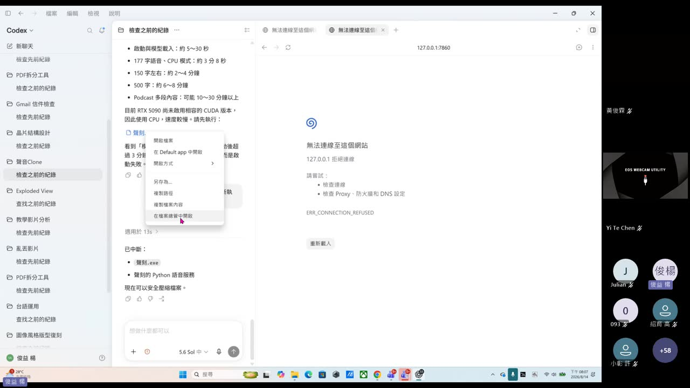
3. 主角一：聲刻 Voice Foundry（本機聲音克隆） [17:45 起]
雙擊 聲刻.exe，瀏覽器打開 127.0.0.1:7860，就是「聲刻 VOICE FOUNDRY」——標語「留住聲線，重新說話」（OPEN-SOURCE VOICE CLONING · LOCAL FIRST）。
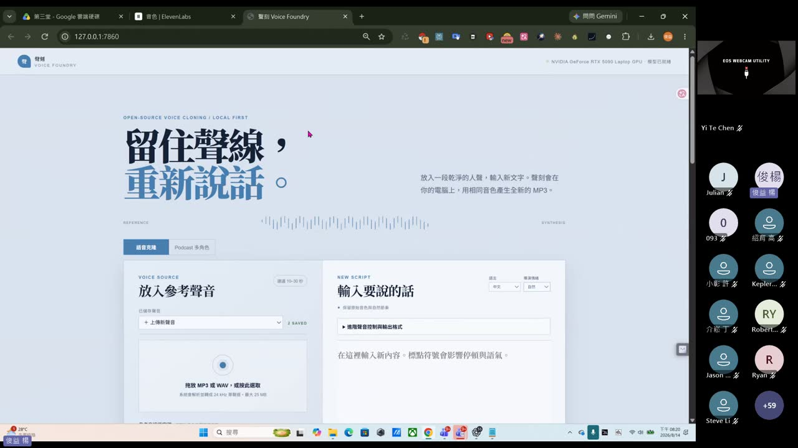
聲刻是什麼、為什麼要「可攜版」
- 本質：一個跑在你電腦上的本機 web app（Python 服務 + 瀏覽器介面，port 7860）。放一段乾淨人聲＋輸入新文字，它就用相同音色產生全新 MP3。
- 可攜版打包：老師把它打包成「聲刻-可攜版」——內含免安裝的內嵌 Python（python-3.12.10-embed）＋模型快取＋
聲刻.exe啟動器，整包約 7 GB，換電腦解壓即用。 - 啟動提醒：看到「模型已就緒」再按生成；啟動後超過 3 分鐘仍無畫面＝啟動失敗。
算力：GPU 快、CPU 慢（但都能跑）
| 情境 | 速度 |
|---|---|
| 啟動與模型載入 | 約 5～30 秒 |
| 150 字（一般段落） | 約 2～4 分鐘（CPU 模式） |
| 500 字 | 約 6～8 分鐘 |
| Podcast 多段內容 | 可能 10～30 分鐘以上 |
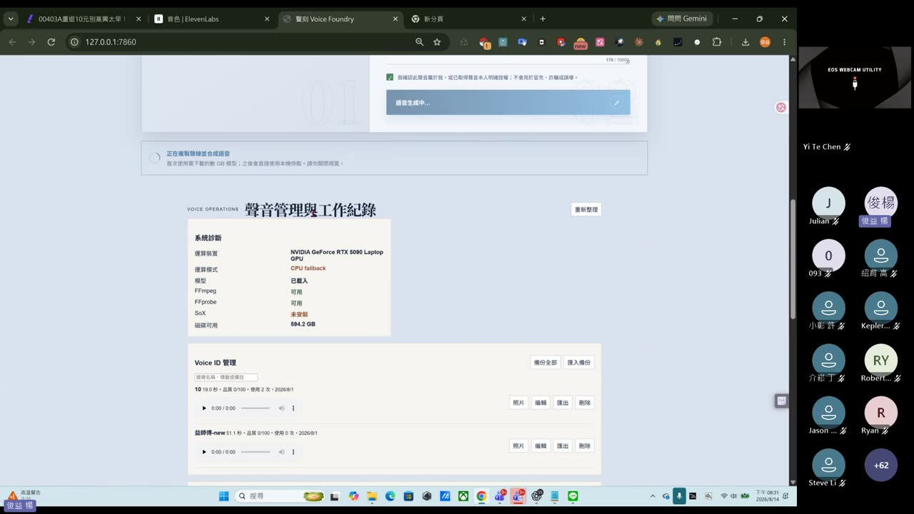
4. 對照組：ElevenLabs 雲端 TTS [06:45–17:00]
在示範本機聲刻之前，老師先帶大家看雲端的對照組 ElevenLabs（elevenlabs.io），讓大家理解「雲端 TTS」與「本機克隆」的差別。
三個模型、怎麼選
| 模型 | 特色 |
|---|---|
| Eleven v3 | 最具表現力，支援 70+ 語言，可用 [laughing]／[whispers] 等 audio 標籤控制語氣，也能生成多講者對話 |
| Eleven Multilingual v2 | Studio 級品質、最自然、情感最豐富，支援 29 語言，適合旁白／有聲書 |
| Eleven Flash v2.5 | 便宜 50%、延遲最低，支援 32 語言，適合對話式即時應用 |
音色庫、我的音色、音色設計
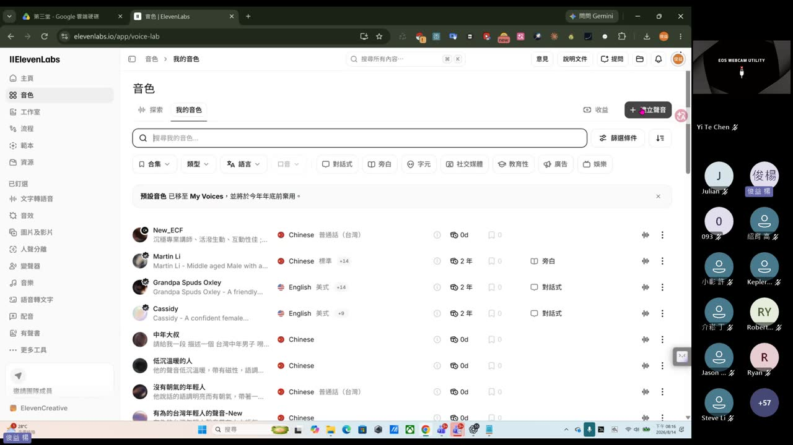
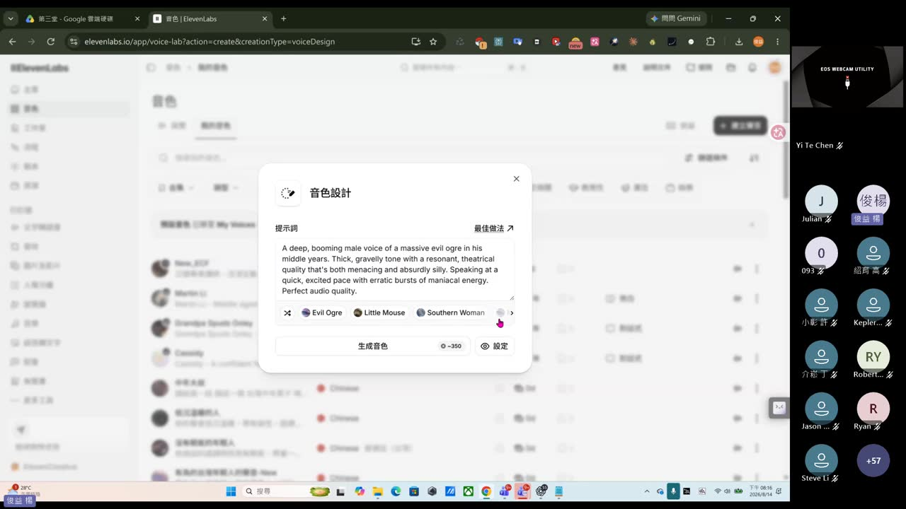
API Key：一個工具開一把「受限金鑰」
如果你要在別的工具（例如聲刻的 CAST、或自己的程式）串接 ElevenLabs，就要到「開發者 → API 密鑰」建立一把 key。老師示範建立時的重點：
- 開啟「限制密鑰」，把用不到的權限關掉（Endpoints 逐項可設「無存取權限／存取」）。
- 可設到期時間、用量限制（點數）。
- ElevenLabs 有「若外洩則自動停用」：偵測到金鑰被公開（例如上傳到 GitHub）會自動停用，是很貼心的防呆。
- 金鑰產生後只顯示一次，關掉對話框前務必複製。
5. 聲音克隆 SOP 與倫理聲明 [23:30–33:00]
回到本機聲刻，示範「語音克隆」分頁的完整操作。老師課前就在 LINE 群請大家「準備自己的聲音，待會就能復刻」。
實測：用自己的聲音唸新聞
老師到 Yahoo 財經反白複製一段 ETF 新聞（178 字），貼進聲刻、勾好倫理聲明、按生成。CPU 模式跑了一分多鐘後——
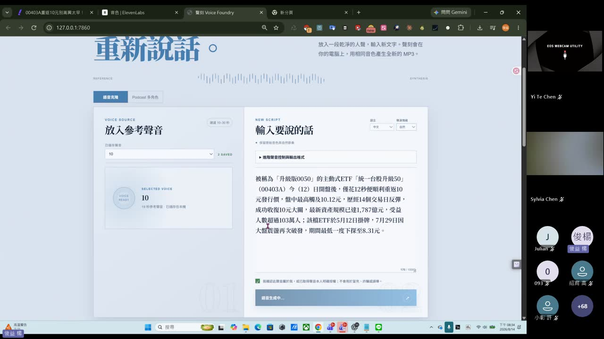
6. CAST：Podcast 多角色工作室 [19:00 起 · 44:00 生成]
聲刻的第二個分頁是 CAST（AI PODCAST 語音生成工作室）：貼上一份素材，AI 直接寫出完整訪談文案，再在本頁合成語音，輸出 MP3 與字幕 MP4。
8 步驟精靈
- 貼上文章自動填表：上傳 txt／md／pdf／html，AI 解析後自動填好下面各欄（需 Groq API Key）。
- 分析主題：例「親子餐廳企劃分析」（快速標籤：AI 趨勢／創業／股市解盤／STEAM 教育…）。
- 目標聽眾：初學者／一般大眾／專業人士／主管／投資人——影響術語密度與解釋深度。
- 情緒節奏曲線：W 型起伏（最受歡迎）／漸強式／先高後穩／雲霄飛車（辯論激烈型）。
- 主持人設定：1 人獨白／2 人對談／3 人圓桌；每位主持人可設姓名、語言、性別、語氣風格、人設專長。
- 焦點關鍵字：節目中必須提及的詞彙或數據。
- 禁止提及：不得出現的主題或詞彙。
- 節目設定：自我介紹、節目長度（短／中 8–12 分／長）、互動風格。
兩個亮點：台語主持人＋聲音混搭
- 台語（意傳）：主持人語言可選「台語（意傳）」，由意傳科技「嘀聲」合成（免 Key、免費展示限流 3 句/分鐘）；可選台語聲線 1／2／3 以變調區分講者。教材使用要標示「語音來源 意傳科技」。
- 聲音可混搭：主持人 A 可用聲刻本機 Clone Voice（你自己的聲音）、主持人 B 用 ElevenLabs（George、Sarah…）或台語——本機與雲端聲音同表選用。
- 試聽引擎：可切「ElevenLabs V3（高品質，需 API Key）」或「聲刻本機 Clone Voice（免 ElevenLabs Key）」。
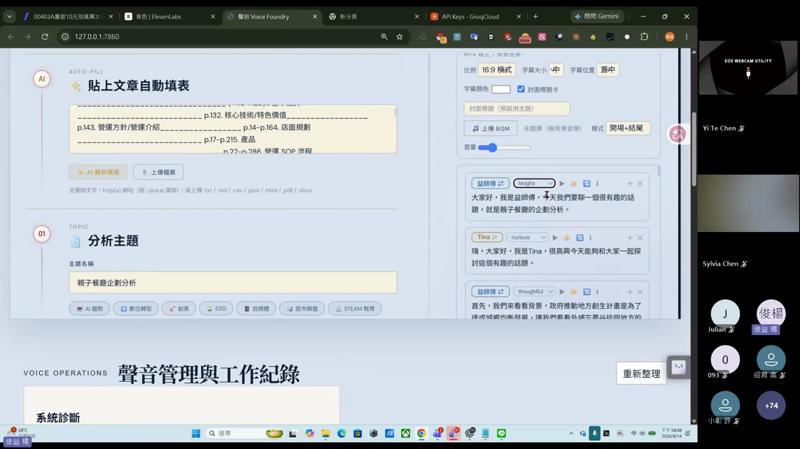
7. 主角二：CAST STUDIO 獨立版 [第二段 02:00 起]
下半場老師先秀 CAST-STUDIO-win.exe——就是把上面 CAST Podcast 工作室單獨打包成一個 Windows 執行檔（約 15 MB），雙擊後自己開瀏覽器，跑在 127.0.0.1:59767。
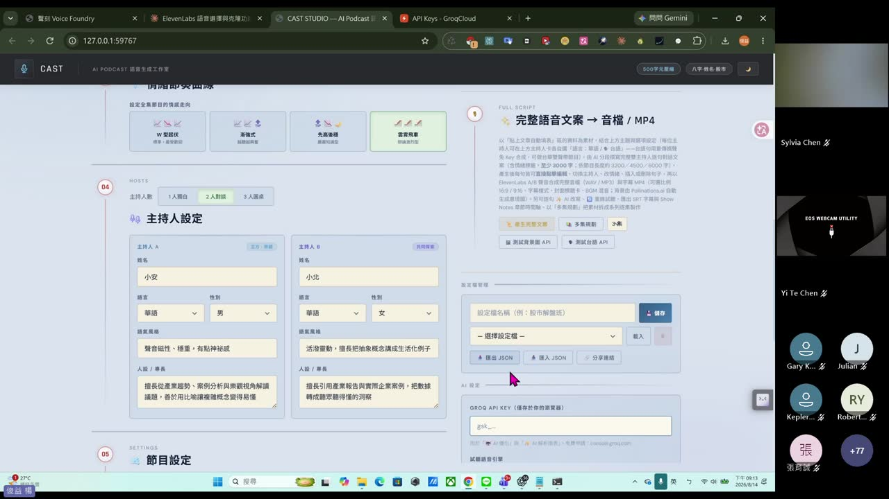
技術揭密：為什麼要「本機小伺服器」
老師打開 Claude 對話（帳號「益師傅・Max」）秀出這個工具的設計原理，這段很值得懂：
.exe 而不是純網頁。老師還提到已在沙盒實測：HTML 內嵌成功、白名單外網域正確回 403、代理轉發鏈路正常。8. 主角三：貼課通課堂即時牆 [第二段 07:30 起]
第三個工具是 貼課通（課堂即時牆・專業版）：老師用 Edge 打開本機的 貼課通-教師專業版.html，開一間房，全班連進來一起貼。
- 教師版建房：填教室名稱（「第三季第三堂」）、房間密碼（選填）、人數上限、背景顏色 → 建立房間，得到房號（如 UNPJ56）。
- 學生版加入：另一個檔
貼課通-學生專業版.html，填暱稱＋房號即可加入（學生版不能建房、不能匯出，其餘同步）。 - 連線技術：即時同步走 WebRTC（PeerJS P2P），學校/公司網路連不上時可在「連線設定」填 TURN 中繼或勾「強制走中繼」。
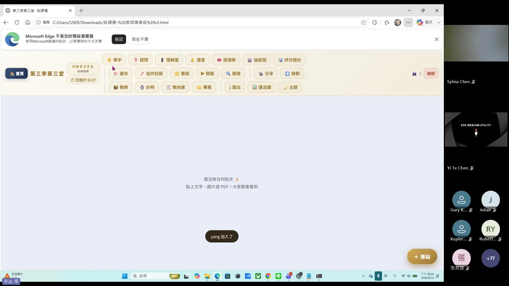
_block 函式擋掉，並提示「學生版無法建立或主持房間，請輸入老師提供的代碼加入課堂」。一份程式，兩種角色。9. 貼課通功能巡禮 [第二段 全程]
老師一個一個示範，全班同時實測。這裡把功能整理成一張表，對照 Padlet／Kahoot 就很好懂。
| 功能 | 作用 | 對標 |
|---|---|---|
| 張貼到牆上 | 貼文字／圖片／檔案 PDF／拍照／錄音／語音輸入，卡片可選顏色、@提及、加表情 | Padlet |
| 舉手 | 學生按舉手，老師收到通知橫幅「XX 舉手了」 | — |
| 匿名提問 | 不顯示姓名，大家可按讚、讚多的排前面；老師可「聚焦」把某題放大投影 | Slido |
| 理解度紅綠燈 | 學生匿名選 🟢跟得上／🟡有點快／🔴聽不懂，老師看即時長條圖調整節奏 | — |
| 搶答 | 搶答鈴，依先後排名 🥇🥈🥉 | Kahoot |
| 評分總計 | 依貼文收到的反應累計到作者（👍1／⭐2／❤️3／🎉5 分），即時排行榜 | Kahoot |
| 抽座號／抽人 | 大轉盤隨機點人 | — |
| 退場券 | 下課前收集每位學生的回饋／心得 | Exit Ticket |
| 畫布／協作白板 | 老師在圖上標註；協作白板全班可同時塗鴉（有人玩井字遊戲） | Jamboard |
| 看板分組 | 切成第一～四組欄位，每張卡片可指定組別 | Trello |
| 簡報播放 | 把牆上貼文變投影片逐張播，含雷射筆／標註 | — |
| 點名／出席 | 「發起簽到」請學員點「我在」，統計在線／已簽到、貼文數、得分 | — |
| 即時投票／問答 | 單選／複選/是非/簡答，最多 8 個選項 | Mentimeter |
| 計時器 | 倒數計時，結束可自動鎖定發文 | — |
| 匯出 | 完整紀錄 zip、簽到 csv、個人成績單、整間 json、逐張 PNG、PPTX、列印 PDF、輪播影片、整牆匯出成一張長圖 | — |
| 分享（螢幕） | 把某個視窗畫面即時推送進牆（需 https 或 localhost） | — |
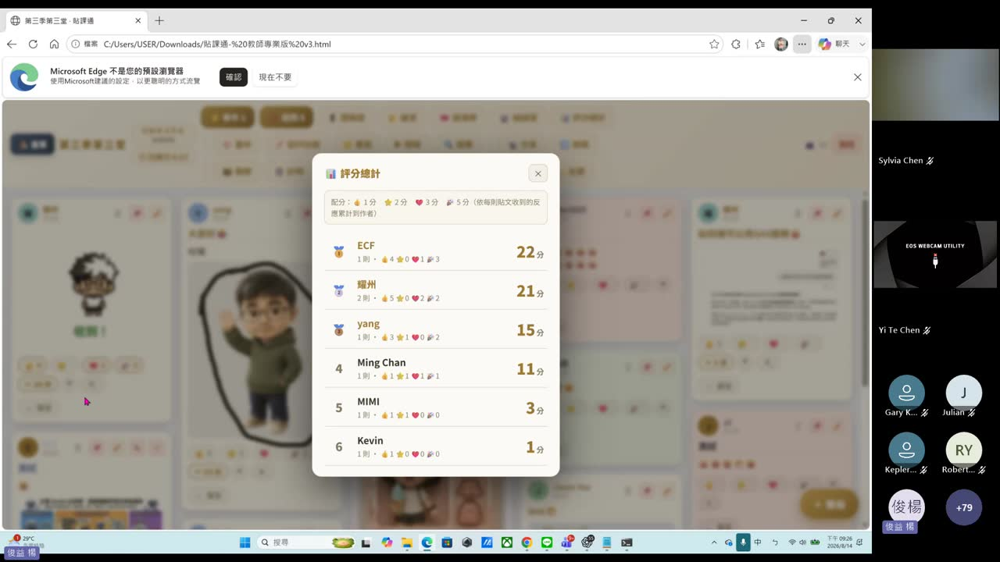
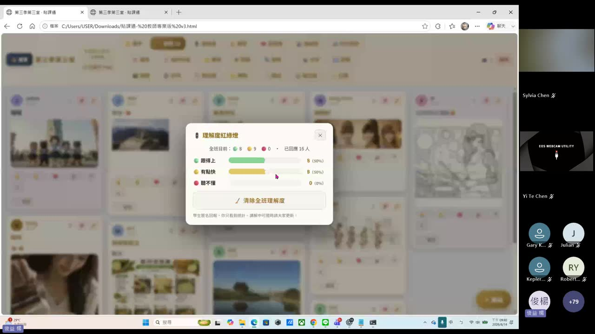
10. 關鍵一課：把單檔工具送上雲端 [第二段 17:00 · 33:00–39:00]
這是本堂最重要的觀念。學員耀州先主動用 AI 拆解貼課通的原理，問 Codex「這個程式可改成 GAS 嗎？變成雲端服務」，得到關鍵答案：
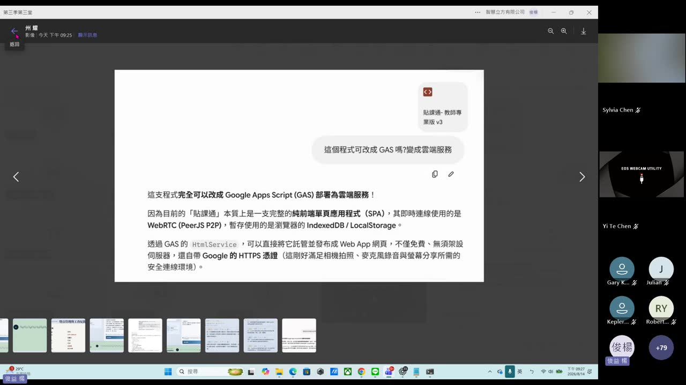
老師走通的路：嵌進 Google Sites → 一鍵發布
- 開 Google Sites 新網站，新增一頁。
- 用「內嵌 ＜＞」→ 自訂內嵌（貼程式碼），把貼課通學生版整頁嵌進去。
- 右上「發布」，網址填
ecf-class→ 得到公開網址sites.google.com/view/ecf-class。 - 誰可以查看：所有人 → 發布 → 「您的協作平台已成功發布」。
- 用無痕視窗開這個公開網址，貼課通學生版正常載入、能加入房間、能貼文——完全走通。
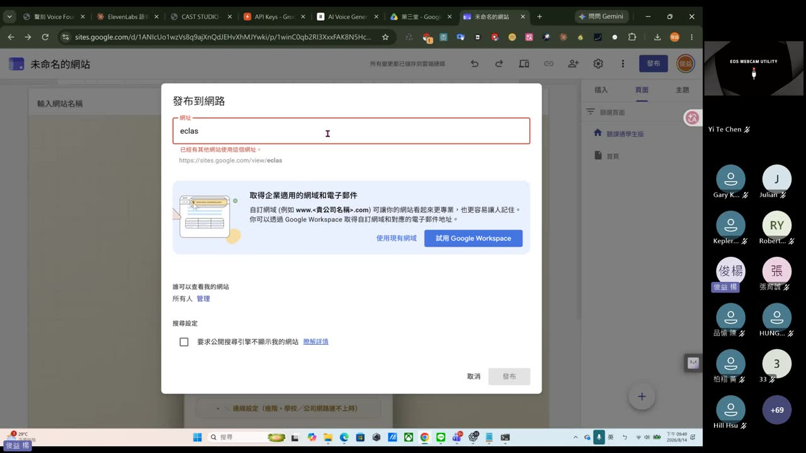
sites.google.com/view/ecf-class，貼課通學生版登入畫面正常顯示（左上「自訂內嵌」）。填暱稱＋房號就能加入——本機單檔工具，變成任何人可用的雲端 App。［第二段 37:30］11. 用 Codex／Claude 打造與除錯 [貫穿全堂]
整堂課其實也是一場「AI 協作開發」的示範：這些工具是老師用 ChatGPT Codex／Claude 一步步做出來、又現場繼續改的。
- 現場除錯：學員的 RTX 50 顯卡跳 CUDA 錯誤，老師直接把錯誤截圖貼進 Codex，Codex 30 秒內判斷「是 PyTorch/CUDA 版本不支援該顯卡架構，不是聲音檔壞掉」，並給出修復步驟。
- 現場改功能：老師把貼課通學生版 HTML 上傳 Claude（Opus 5·High），要求「新的貼文都產生在最上方」——用 AI 迭代自己的工具。
- 老師的工具軍火庫：下載資料夾裡滿滿都是 AI 做的工具（debate_arena×5、ollama_studio×10、AI-Agent-Codex、TaiwanStockCollector、BMC 生成器…）。
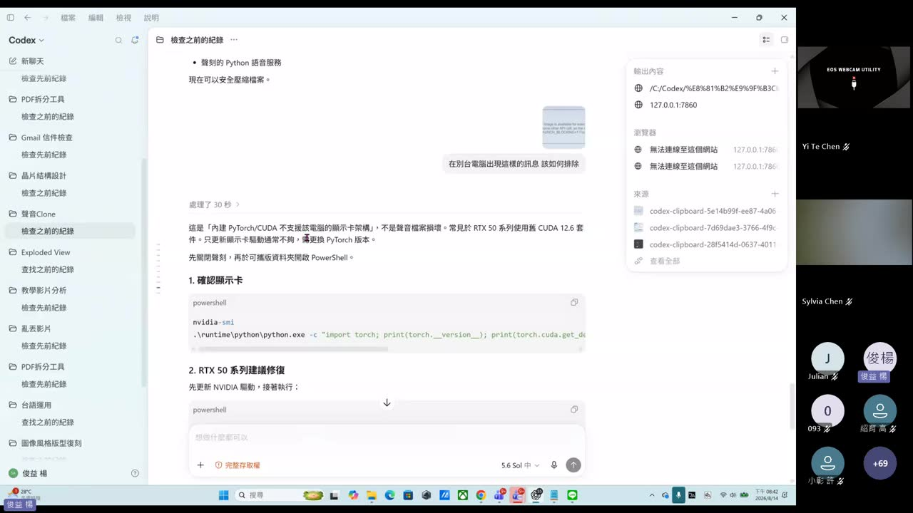
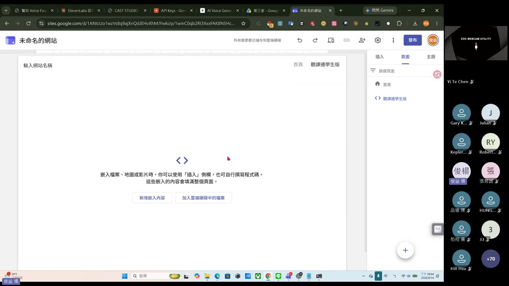
12. 課後自我檢核表
看完這堂，用這張表確認自己有沒有真的懂。
- 我能說出「本機聲刻」與「雲端 ElevenLabs」的差別（誰花錢、資料在哪、快慢）。
- 我知道聲音克隆的六個步驟，尤其記得第 4 步要勾倫理聲明。
- 我知道 RTX 50 系列跳 CUDA 錯誤時不是檔案壞掉，會自動 CPU fallback，也知道怎麼把錯誤丟給 AI 求解。
- 我理解 CAST 能把一份素材變成多角色 Podcast，還能混搭本機／雲端／台語聲音。
- 我懂為什麼 CAST STUDIO 要做成 .exe 本機小伺服器（繞過 CORS）。
- 我會用貼課通開房／加入，也知道教師版與學生版是同一份程式。
- 我能講出貼課通至少 5 個互動功能並對照 Padlet／Kahoot／Slido。
- ★ 最重要：我理解這些工具都是純前端單檔 HTML，可以用 Google Sites 嵌入＋發布變成公開網址給別人用。
- 我知道純前端工具的資料存在瀏覽器，要長期保存就得自己部署／匯出。
13. 老師金句
14. 資料來源與整理說明
- 原始教材：Google Drive 資料夾「第三堂」——課堂錄影兩段（第一段 59 分 49 秒＝聲刻／ElevenLabs／CAST；第二段 1 小時 26 分 24 秒＝CAST STUDIO／貼課通／上雲），加上四個工具檔（聲刻可攜版、CAST-STUDIO.exe、貼課通教師/學生版、BMC 生成器）。
- 整理方法：兩段錄影用 ffmpeg 每 15 秒抽一格（第一段 239 格＋第二段 346 格＝共 585 格），逐格用眼睛看過並記錄每個畫面；同時用 faster-whisper 產出全程逐字稿（第一段 695 段、第二段 2400 段），兩者交叉比對。
- 可信度標註：本頁畫面截圖與功能名稱皆為錄影實錄；速度數字、API 說明取自畫面上 Codex／工具本身的文字；操作步驟為逐幀還原。少數聊天室暱稱為 OCR 辨識，可能有小誤差。
- 螢幕截圖：取自錄影抽格（每 15 秒一格），非簡報原圖——這堂課沒有傳統簡報檔，「投影片」就是老師的實機操作畫面。
- 本堂沒有課後作業（訂閱制實作課，重點在跟著動手做出自己的工具與雲端頁面）。